IntelliRide
Integrating physical and digital controls for the semi-autonomous electric bike to ensure a seamless commuting experience
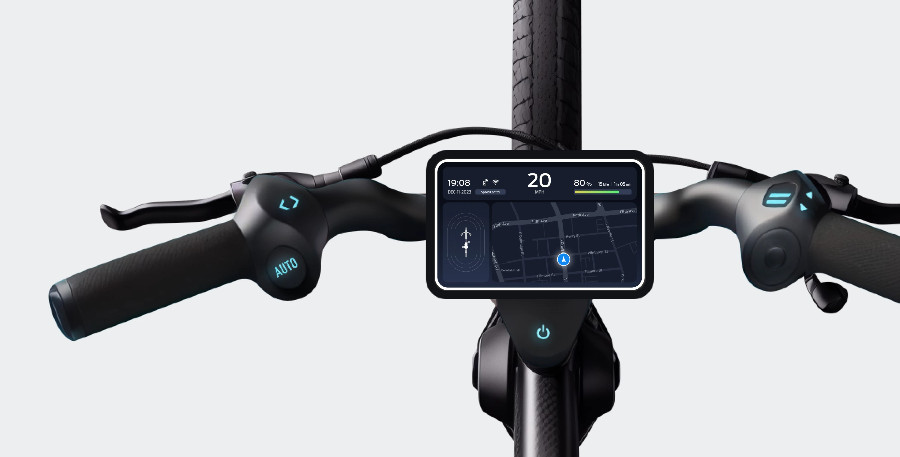
Project
UX design project at Carnegie Mellon University
My Contribution
Product Design
UX Design
Prototyping
Usability Testing
Team
2 Product Designers
Timeline
Oct – Dec 2023 (7 weeks)
Project Goal:
Intuitive autonomous bike control
IntelliRide is a conceptual semi-autonomous electric bike featuring Level 3 driving automation. In this case study, I will mainly focus on how we designed the interaction between users and the autonomous system, both physically and on screens.
User Research:
Exploring bikers' needs
At the beginning of the project, we conducted guerrilla research and interviewed several bikers around the campus to understand their pain points on biking. We also observed e-bike parking on the streets and visited a bike shop in Pittsburgh to learn more about the existing e-bike design and market.
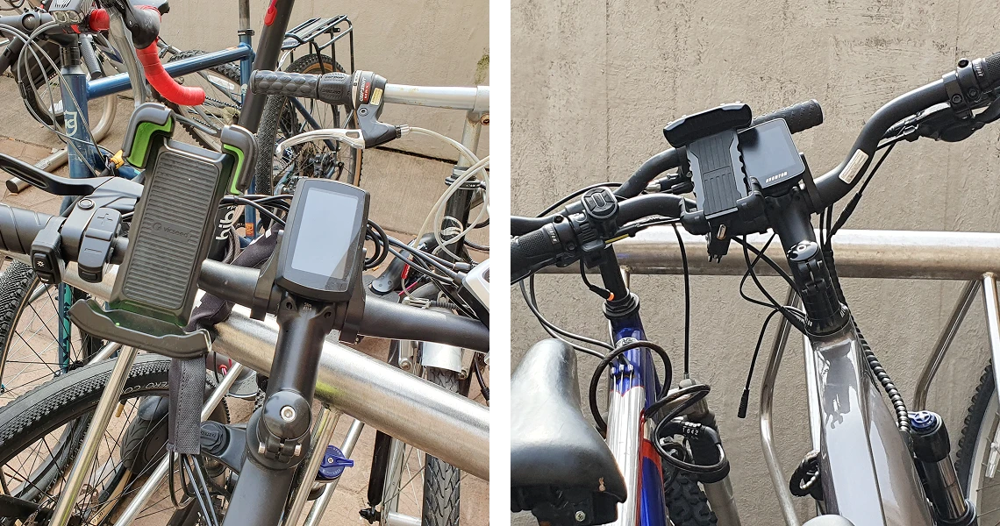
People find electric bikes convenient, but they struggle with complex controls and trust in autonomy.
Finding 01
1. Easier Control
Many commuters use e-bikes to commute because they are faster and effortless. However, many of them find e-bike controls complex and overwhelming.
Finding 02
2. Accept the New System
People are generally hesitant about giving full control to the autonomous system, thinking it might not be "smart" enough to deal with every situation during the ride.
Design Overview:
Integrating physical and digital controls to ensure a seamless commuting experience
We designed a flexible control in autonomous mode that enables riders to choose the amount of control they would like to have at any point during the autonomous mode. The integrated physical controls make adjustments more intuitive and safer.
Challenge 01
How might we reduce cognitive load for users while riding?
Design Strategy:
Simplifying Displays and Controls
From the interview with staff from a bike shop, we learned that e-bike controls can be overwhelming for users due to their complexity. Therefore, it is essential to (1) present bike status information intuitively to enhance user understanding and (2) organize controls based on ergonomic principles, facilitating easier adjustments for users.
Design Solution:
Ergonomic Information Display and Interaction
Solution 1
Optimizing Information Placement for Quick Glances
We placed the screen lower on the headset to keep the rider's view clear. To make key info like speed, battery, and autonomous status easy to check, we positioned it in the top bar of the dashboard for quick glances while riding.

Solution 2
Clear Mode Indication with Color Coding
We used a white border for manual mode and a green border for autonomous mode, allowing riders to quickly recognize their current mode at a glance.
Solution 3
Ergonomic Button Placement for Safe Control
We positioned all buttons within thumb's reach on both sides, so riders can access controls without letting go of the grips.

Left
1. Blinker
2. Autonomous Button: As the main feature of the semi-autonomous bike, the "Autonomous" button is large and easy to reach.
Right
3. Assistance level
4. Trackpad: We designed a trackpad that enables users to navigate the touchscreen without lifting their hands from the grip. The cursor would snap to clickable elements for easier control.
Challenge 02
How might we make the autonomous system more acceptable to users?
Design Strategy:
Balancing Autonomy with User Control
We assumed the autonomous system would control the steering according to the route it set and adjust speed based on the surroundings and the actions (e.g., go at the green light, stop at the red light, and slow down when turning).
In our approach to autonomy, we aimed to empower users with a sense of control even in fully autonomous mode. By defining individual spectrums for crucial bike operations such as acceleration, steering, and braking, we established a dynamic system where the autonomous influence adjusts based on user inputs. This allows users to override specific aspects of autonomous operation at any given moment, ensuring a seamless and flexible riding experience.
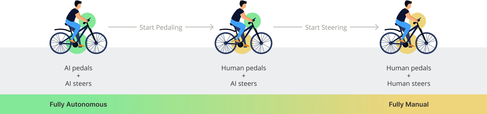
Design Solution:
Flexible Autonomous Mode
Solution 1
Customizable Autonomous Mode for Flexibility
When users press the "Autonomous" button, they can choose between full navigation or speed control only.
Autopilot
If the users choose "Autopilot," they can select saved destinations to start moving immediately or search for their destination.
Smart Speed Control
If the users choose "Speed Control Only," the system will only control the speed, and the users will steer manually.
Solution 2
Take Over and Override Autonomous Mode
If the system detects a situation requiring user intervention, a takeover message appears with clear instructions, helping riders override the system seamlessly and avoid potential accidents caused by users' nervousness.
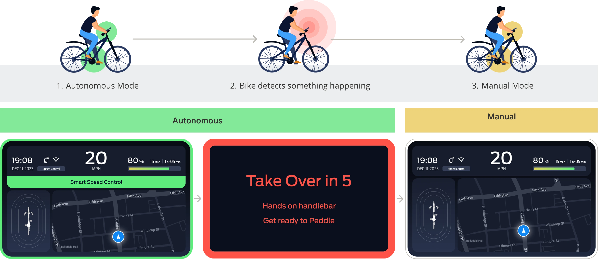
Design Iteration
Testing the Riding Experience with Prototypes
Dashboard Prototype:
Simulating the Autonomous mode
1. Low-fidelity Paper Prototype
For the first round of testing, we built a physical prototype with paper and cardboard to validate our concepts of the whole riding process. We installed our paper prototype on an office chair to move the participants when they activated the autonomous mode, simulating the riding experience with the autopilot system.
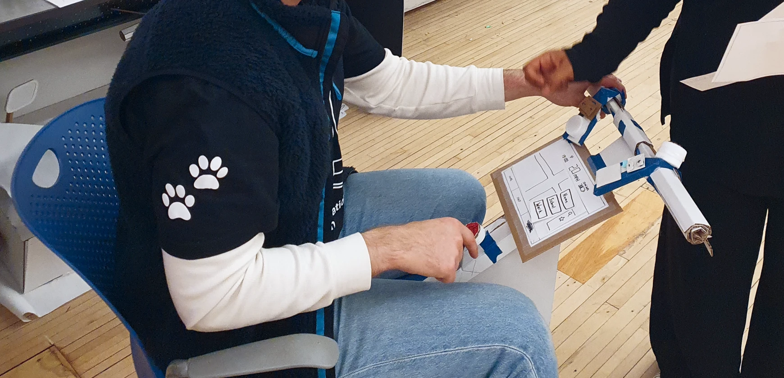
2. High-fidelity Digital Prototype
Once we validated the user flow with the paper prototype, we refined our design and created a high-fidelity digital prototype for user interaction testing. Using the Wizard of Oz method, we simulated both autonomous mode and scenarios requiring users to interact with the digital dashboard using physical controls.
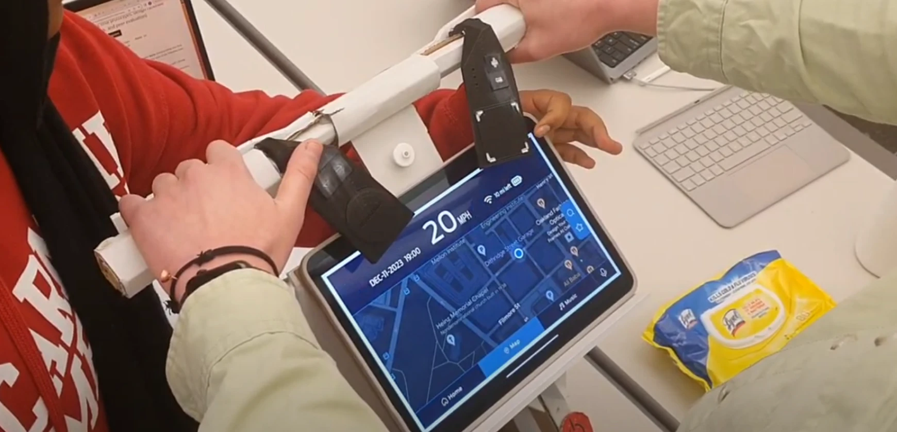
Physical Control Prototype:
Refining the Ergonomics
1. Distributing the Controls
To enhance user control while riding, we planned control placement to ensure accessibility while gripping the handlebars. We began by sketching a diagram (image 1), organizing controls into logical groupings on either side. Then, we built a paper prototype (image 2) for testing user comprehension without extra guidance.
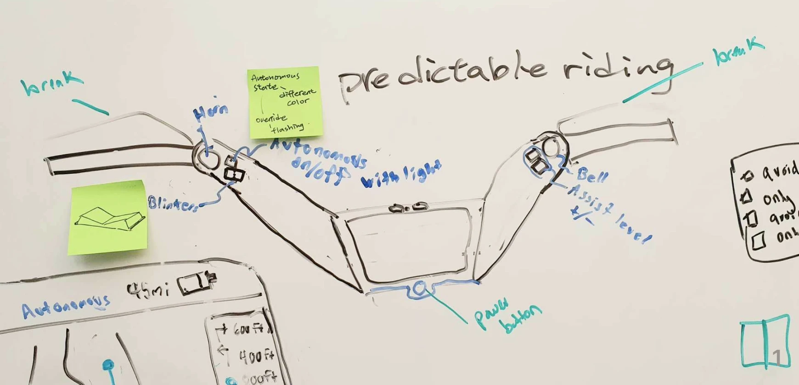
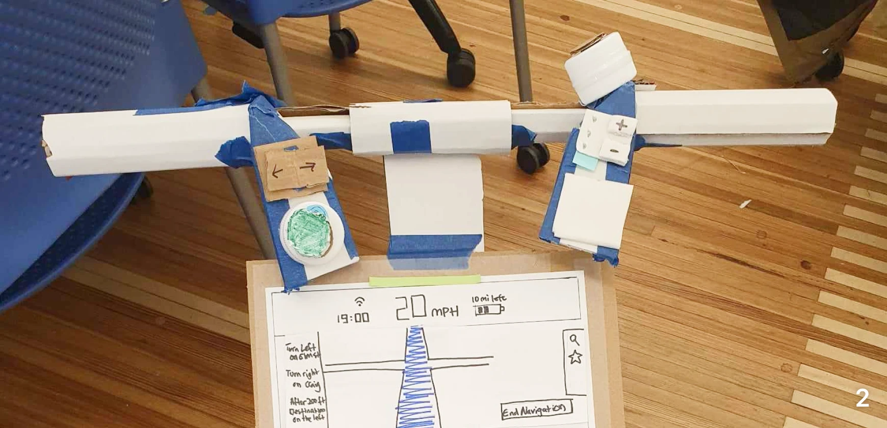
2. Iterating Control Size
During the usability testing, we realized that the size of the controls was too large for people with smaller hands (image 3). Subsequently, we iterated on the control size, refining them through sketches (image 4) and clay models (image 5) to enhance the ergonomic design.
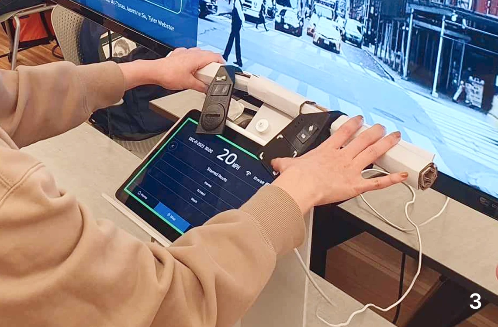
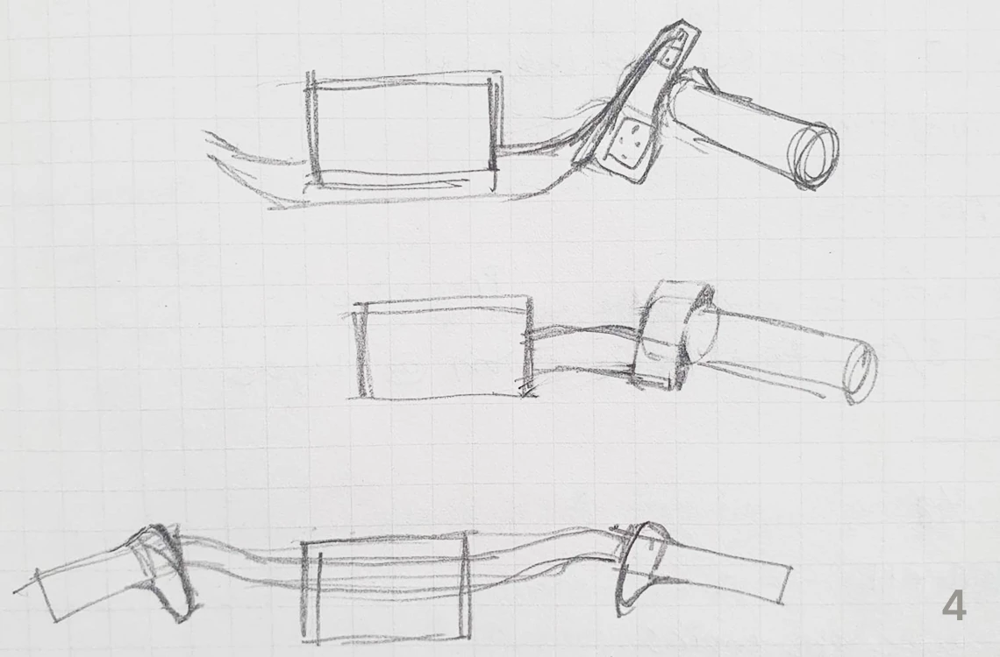
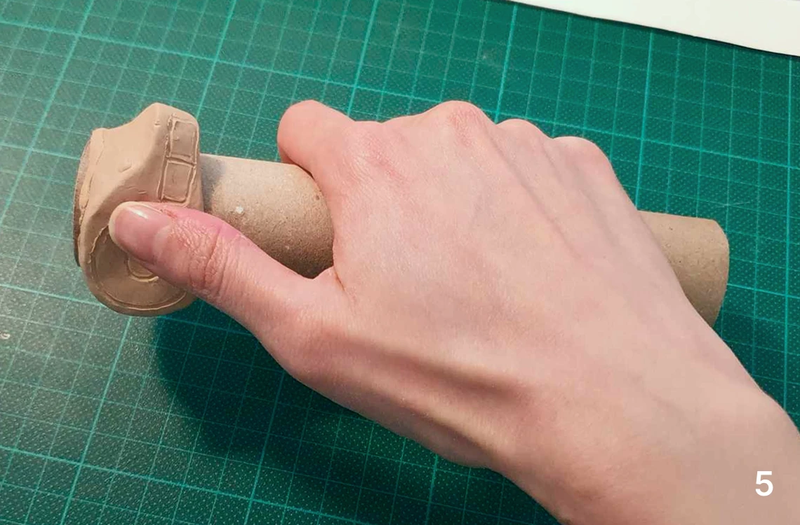